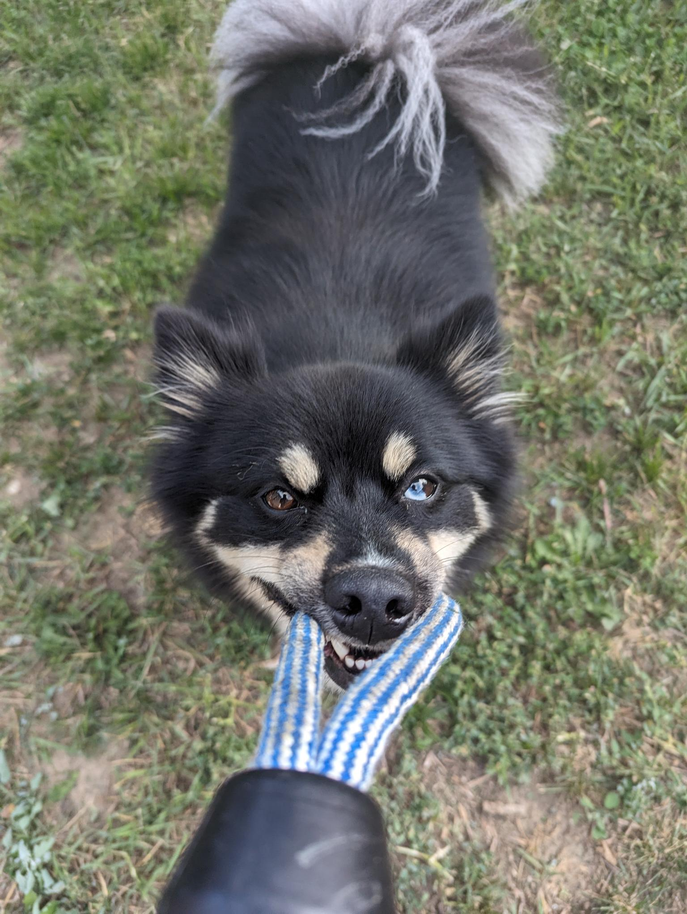

Strengths
I demonstrate exceptional organizational skills, ensuring that all tasks are completed efficiently and on time. My ability to communicate clearly and effectively allows me to convey ideas and instructions with ease, fostering a collaborative environment. I consistently develop well-thought-out plans, considering all variables and potential challenges to ensure successful outcomes. My attention to detail and methodical approach make me a reliable and dependable team member. Overall, my strengths in organization, communication, and planning make me an invaluable asset to any team.
Weaknesses
One of my weaknesses is that I can be somewhat reserved, which can make it challenging to assert myself in new or unfamiliar situations. I tend to carefully consider others' opinions before voicing my own, which can sometimes delay my contributions to discussions. While this approach allows me to understand different perspectives thoroughly, it may occasionally give the impression of a lack of confidence. I am actively working on being more proactive in sharing my ideas and viewpoints. Nevertheless, I believe my ability to listen and thoughtfully consider others' perspectives ultimately enhances my collaborative skills.
A Little About Me
Hello, my name is Lizzy. I am a continuing student at Southeast technical college. I plan on graduating Southeast technical college with a 2-year degree in software programming. I also plan to become a software engineer hopefully soon after that.
My family is one of the biggest parts of my life. I grew up with my mother and sisters and I love them dearly.
I also love animals. I have worked at multiple animal facilities and my love for them has only grown stronger as the years have progressed. I have a dog named Kuro Kuma and he is my pride and joy.
